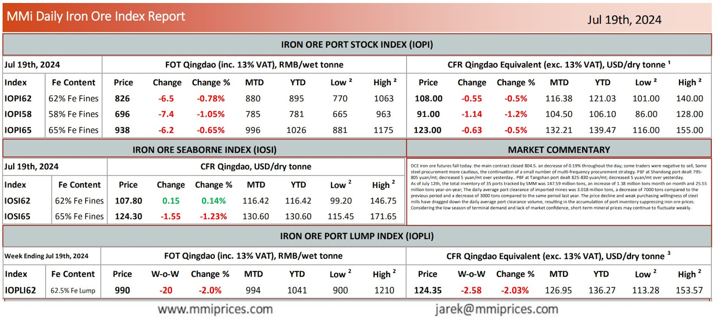

DCE iron ore futures fall today. the main contract closed 804.5. an decrease of 0.19% throughout the day;some traders were negative to sell, Some steel procurement more cautious, the continuation of a small number of multi-frequency procurement strategy. PBF at Shandong port dealt 795- 805 yuan/mt; decreased 5 yuan/mt over yesterday.. PBF at Tangshan port dealt 825-830 yuan/mt; decreased 5 yuan/mt over yesterday. As of July 12th, the total inventory of 35 ports tracked by SMM was 147.59 million tons, an increase of 1.38 million tons month on month and 25.55 million tons year-on-year; The daily average port clearance of imported mines was 3.018 million tons, a decrease of 7000 tons compared to the previous period and a decrease of 3000 tons compared to the same period last year. The price decline and weak purchasing willingness of steel mills have dragged down the daily average port clearance volume, resulting in the accumulation of port inventory suppressing iron ore prices. Considering the low season of terminal demand and lack of market confidence, short-term mineral prices may continue to fluctuate weakly.

Download PDFSource: Metals Market Index (MMi)